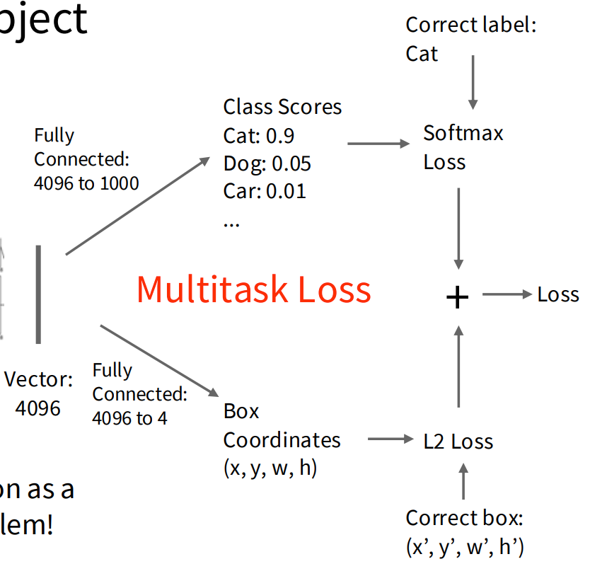

Lecture 9 #
Computer Vision Tasks #
任务包括
- Semantic Segmentation
- Object Detection
- Instance Segmentation
Semantic Segmentation #
- 训练过程：Paired training data: for each training image, each pixel is labeled with a semantic category.
- 测试过程：classify each pixel of a new image
考虑Silding Window（遍历所有）:
- 区间不能太小，因为要囊括Context
- 考虑一个区块，用CNN探测中心像素并分类
- 缺点：效率低，没有复用同一个Context
考虑做卷积：
- 问题：卷积一般最后会减小特征的空间规模，但是 Semantic Segmentation 会要求输出规模和原图相同。
- 不降维的卷积的问题：首层开销会很大
- Downsampling + Upsampling

Unpooling #
Upsampling过程涉及到反池化Unpooling。
例如从2*2 -> 4*4 的规模，可以批量设置2*2方块最近邻的数值；也可以把多出来的批量设0
进一步有Max Unpooling方法。

Transposed Convolution 转置卷积 #
卷积核参数可学习，直接乘以输入，将输入映射到对应的大区域。
区域与区域间的重叠部分是可以叠加的。
U-Net #

Object Detection #

单个物体的探测，涉及到Multitask Loss 和 联合学习，需要学习矩形框定范围的L2 Loss和标签分类的Softmax。
多个物体的情况：
- 拿每一个Label都跑一遍对应检测
- 问题：效率低，计算开销大
- 解决：Selective Search
R-CNN #
比较慢的方法是：提取约2000个RoI (Regions of Interest) 然后把它们变形成特定像素大小，再进行卷积学习，计算SVM
快的方法：Run whole image through ConvNet，然后再根据特征提取RoI进行分析等操作
- 优势：先提取特征再计算，可以减少对特征重复计算
- 可以反向传播计算出原像素

Region Proposal Network #
实际训练时对同一个中心坐标像素采用不同的K个截取框，排序后筛查出得分最高的
实际实现 #
-
YOLO (You Only Look Once)
- 把图片分成网格，用来确定区间内的物体类别
- For each box output:
- P(object): probability that the box contains an object
- B bounding boxes (x, y, h, w)
- P(class): probability of belonging to a class
- 也就是确定格子里有东西及东西所属类别的概率。
-
Object Detection with Transformers (DETR)

优势：能结合全局的Context
注意这里的Query输入相比传统NLP，它是独立的不由 W_Q 决定的；可以反向传播更新
Instance Segmentation #
Semantic Segmentation 只分类区块而没有个体个数；Object Detection 区分了个体但边界粗糙。
Instance Segmentation 统合分类与个体。


改进在于
- 在每一个RoI里面应用一个 28*28 的 Binary Mask，做卷积网络，用于预测区块对应图形轮廓
- 将RoI提取成一个14*14的特征图，卷积后分辨率变成28*28
Visualization & Understanding #
涉及到对视觉处理网络的黑箱和直观理解。
- First Layer: Visualize Filters - 在第一层可以看出一些Filter的纹理和噪声。
- Saliency Maps - 可以通过反向传播，检查各个像素的显著性和敏感性，标明成Saliency Maps。
- CAM (Class Activation Mapping) - 看最后一层卷积网络的决策权重图
- Grad-CAM (Gradient-Weighted Class Activation Mapping) - 计算Score对任意一层的梯度，将之作为权重表达区域的梯度敏感度